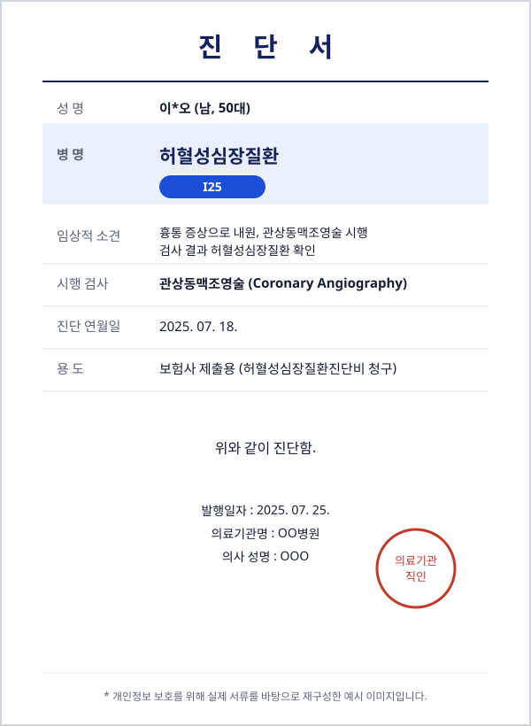

관상동맥조영술 이후 허혈성심장질환(I25) 진단비 지급
문의내용
흉통 등의 증상으로 관상동맥조영술을 시행받은 결과 허혈성심장질환을 진단받으셨습니다. 가입해두신 AIA생명 보험의 진단비 특약으로 보험금을 청구할 수 있는 상황이었으나, 진단 및 검사 내역을 정리해 청구 절차를 진행할 필요가 있어 상담을 요청하셨습니다.
진단서

진행 과정
관상동맥조영술 검사 결과지와 진료기록 등 청구에 필요한 서류를 준비하고, 보험사 심사 과정에서 요청된 소명자료를 보완하며 협의를 진행했습니다.
결과
심사 완료 후 허혈성심장질환진단비를 정상적으로 지급받으셨습니다.